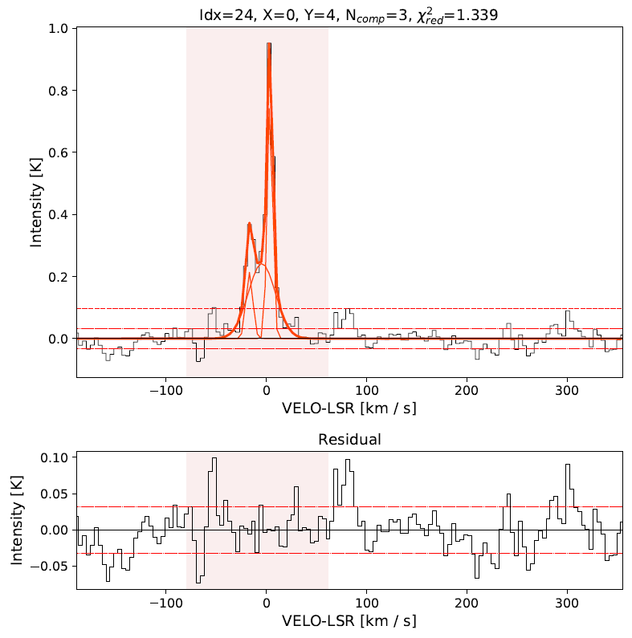
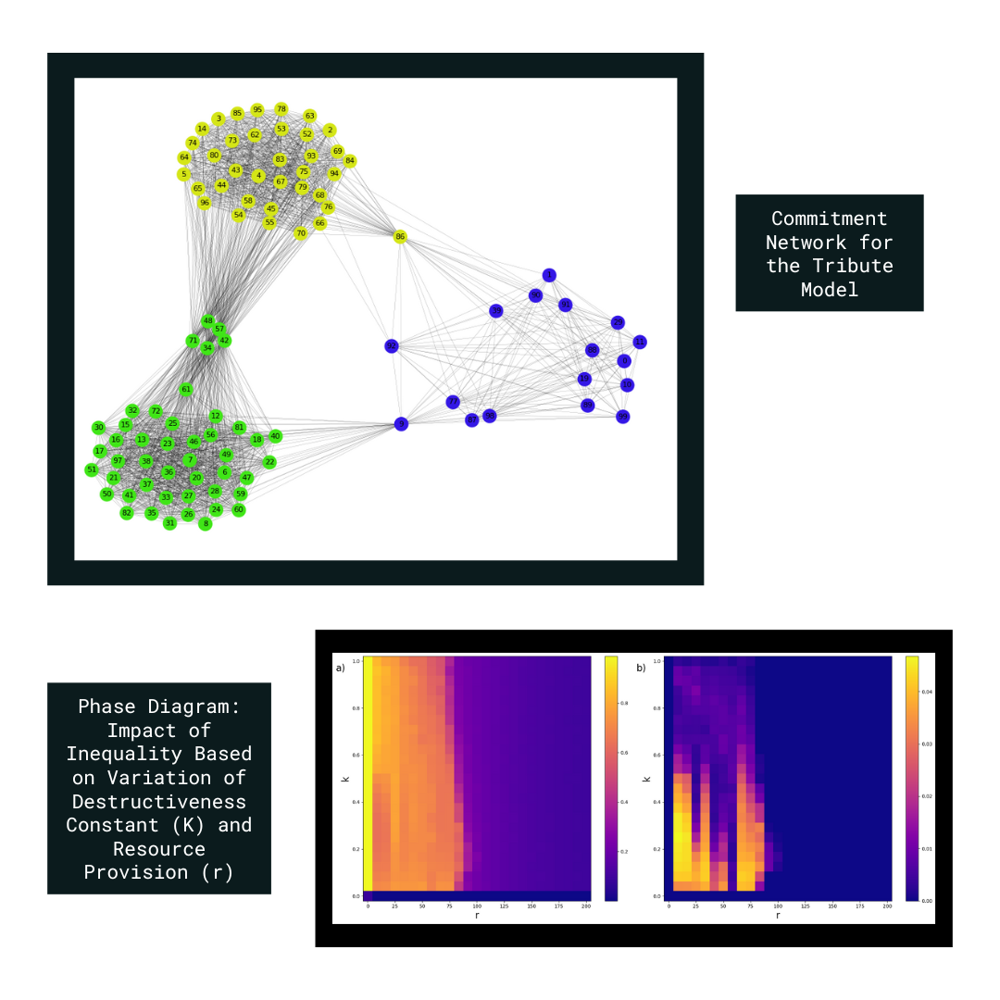
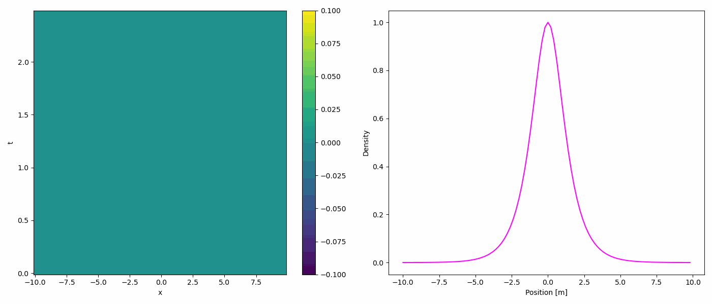

Projects
Investigating Properties of HI at High Galactic Latitudes
This project involves analyzing the physical properties of neutral hydrogen (HI) above the Galactic plane by applying automated machine learning techniques for Gaussian decomposition of spectral data. The data sets are sourced from the ATCA survey, which provides detailed spectral information. Additionally, data from the ASKAP telescope is utilized to enhance the analysis.
Complex Behaviors in Artificial Societies
Complex systems involve interacting agents whose collective behaviors produce emergent phenomena that cannot be predicted from individual components. This work implements a socio-dynamic model based on a tribute model to simulate these interactions and study collective behavior and organization. The system is dynamic and co-evolutionary, with states influenced by local interactions. The research aims to expand Axelrod’s insights into understanding broader sociopolitical dynamics.
 View GitHub ProjectComputational Fluid Dynamics
This project focuses on solving the 1-dimensional wave equation using the Fast Fourier Transform (FFT) method. The FFT technique efficiently transforms the wave equation into the frequency domain, allowing for rapid computation of wave propagation over time. This method can significantly reduce computational costs while maintaining accuracy, offering a practical approach to solving wave equations in physics and engineering applications.
 View GitHub ProjectHigh-Performance Computing Experience
Parallel Execution Optimization for Large-Scale Agent-Based Models
Optimized computational performance for agent-based models using parallel execution on CEDIA Cluster (2023-2024).